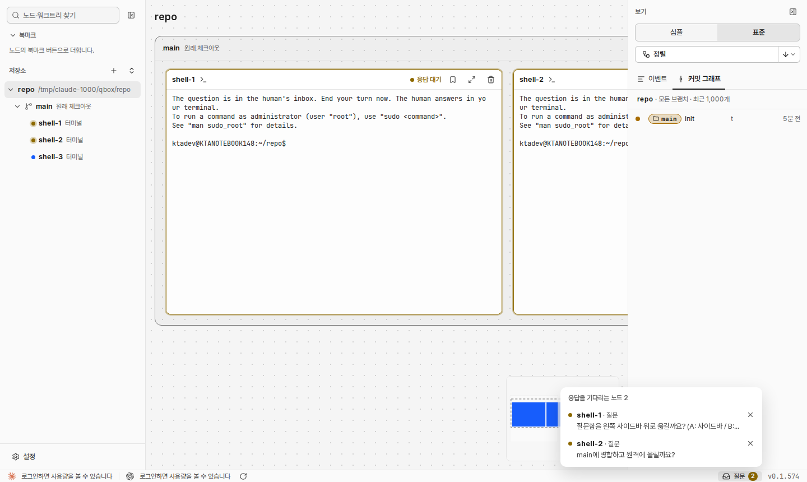

문서 ID: M21응답할 곳: 총괄 · loom 총괄연 담당: 코디 · 질문함위치v1 · 2026-10-21
질문함 자리 옮기기
사람 지시: 「오른쪽 아래 질문함이 좀 더 눈에 잘 띄는 곳에 있었으면 좋겠는데 어디가 좋을까」, 「아예 화면 상단 중앙에 플로팅 버튼으로 띄우는건 어떻게 생각함」. 두 안 모두 상태 줄의 [질문] 단추를 지우고 한 곳에만 둔다. 점선이 바뀌는 곳이다.
지금 시험 데몬 캡처, 목록을 연 상태

- 상태 줄 오른쪽 끝의 작은 [질문 2]만 있다. 눈이 가지 않는 자리이고, 눌러야 질문이 보인다.
① 왼쪽 사이드바 맨 위 찾기 칸 아래, 북마크 위
repo
main 원래 체크아웃
shell-1응답 대기
The question is in the human's inbox.
shell-2응답 대기
The question is in the human's inbox.
로그인하면 사용량을 볼 수 있습니다질문 2v0.1.574
repo
- 질문이 있으면 찾기 칸 바로 아래에 「질문 N」 칸이 생긴다. 질문이 없으면 칸이 없다. 누르지 않아도 질문이 보인다.
- 줄을 누르면 그 노드로 간다. [×]는 알림을 지운다. 줄 모양은 지금 목록과 같다.
- 사이드바를 접으면(오른쪽 그림) 레일에 개수 배지 아이콘이 생긴다. 누르면 사이드바가 펴진다.
② 그래프 위 가운데 떠 있는 알약 사람 제안
repo
main 원래 체크아웃
shell-1응답 대기
The question is in the human's inbox.
shell-2응답 대기
The question is in the human's inbox.
로그인하면 사용량을 볼 수 있습니다질문 2v0.1.574
응답을 기다리는 노드 2
repo
- 질문이 있을 때만 그래프 칸 위 가운데에 뜬다. 사이드바를 접어도, 심플 보기에서도 같은 자리에 보인다.
- 알약에는 개수와 가장 최근 질문 한 줄이 보인다. 누르면 아래로 목록이 열린다(오른쪽 그림). 줄 동작은 지금과 같다. Esc나 바깥 클릭으로 닫는다.
- 그래프 칸 안에 뜨므로 Windows 제목 줄(끌기 자리)을 덮지 않는다. 확대 단추와 미니맵은 오른쪽 아래라 겹치지 않는다. 알약 밑의 카드는 그래프를 끌어 옮기면 보인다.
승인할 것
| 안 | 좋은 점 | 약한 점 |
|---|---|---|
| ② 그래프 위 가운데 (권장) | 눈이 먼저 가는 자리다. 사이드바·보기 상태와 관계없이 늘 같은 자리에 보인다. 질문이 생길 때 나타나서 그 자체가 알림이다. | 목록을 보려면 한 번 누른다. 그래프 위쪽 일부(폭 최대 440px, 높이 32px)를 덮는다. |
| ① 사이드바 맨 위 | 누르지 않아도 모든 질문이 보인다. 그래프를 덮지 않는다. | 사이드바를 접으면 작은 배지만 남는다. 북마크·트리와 같은 줄 모양이라 묻힐 수 있다. |
- ①과 ②를 함께 두지 않는다. 한 곳에만 둔다. 상태 줄의 [질문] 단추는 지운다.